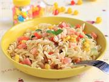
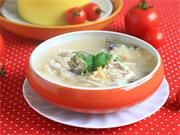
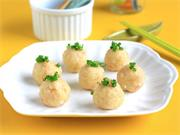
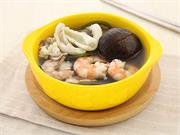

注意事项
推荐人群:
备孕
孕期
月子/产后
婴儿（8个月以上）
儿童
挑鲜活个大的，表面看着明亮，虾身硬挺的为好。雌虾更为鲜美。鉴别雌龙虾的方法是看虾的头体连接部位下表皮是否有一对成三角的小刺，如果有那就是雌龙虾。
整只对虾的烹调方法有红烧、油炸、甜烤，加工成片、段后，可熘、炒、烤、煮汤，制成泥茸，可制虾饺、虾丸；色发红、身软、掉拖的虾不新鲜尽量不吃，腐败变质虾不可食；虾背上的虾线应挑去不吃。
整只对虾的烹调方法有红烧、油炸、甜烤，加工成片、段后，可熘、炒、烤、煮汤，制成泥茸，可制虾饺、虾丸；色发红、身软、掉拖的虾不新鲜尽量不吃，腐败变质虾不可食；虾背上的虾线应挑去不吃。
食谱推荐

什锦炒螺旋面
这是一道简单的炒意面，色彩的搭配让孕妈更有食欲。其中，鸡肉的消化率高，很容易被人体吸收利用，有增强体力、强壮身体的作用。每天适量食用，可以增强孕妇免疫力，减少患病几率。

海鲜浓汤
常吃豆腐可以保护肝脏，促进机体代谢，增加免疫力并且有解毒作用。也是儿童、病弱者及老年人补充营养的食疗佳品。豆腐含有丰富的植物雌激素，对防治骨质疏松症有良好的作用。还有抑制乳腺癌、前列腺癌及血癌的功能。...

虾泥薯球
虾中含有20%的蛋白质，是蛋白质含量很高的食品之一，是鱼、蛋、奶的几倍甚至十几倍，虾和鱼肉相比，所含的人体必需氨基酸缬氨酸并不高，但却是营养均衡的蛋白质来源，另外，虾类含有甘氨酸，这种氨基酸的含量越高，虾...

鲜味海带汤
海带里面含有丰富的碘，而碘也是预防甲亢的最佳食品，除了碘之外，海带还含有多种人体所需的矿物质元素，食用海带有助于提升免疫力、有助于补钙等功效。
相关词条
虾皮的做法大全 |
牡蛎的做法大全 |
干贝的做法大全 |
海带的做法大全 |
紫菜的做法大全 |
墨鱼的做法大全 |
鱿鱼的做法大全
相关文章
- 胡萝卜瘦肉泥营养价值
- 宝宝辅食鸡肉泥冷冻多久
- 虾肉泥的家常做法大全
- 虾肉泥辅食选什么虾
- 7个月能吃肉泥吗
- 虾肉泥的做法
- 蒸鸡肉泥要加水吗
- 虾泥肉泥丸怎么做
论坛精选
-
1
小龙虾
-
2
来来，小龙虾管饱
-
3
麻辣小龙虾
-
4
coco探店︱打卡四种口味，8斤重小龙虾拼盘
-
5
2021年全国小龙虾烹饪大赛和